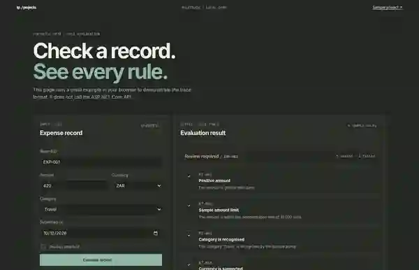
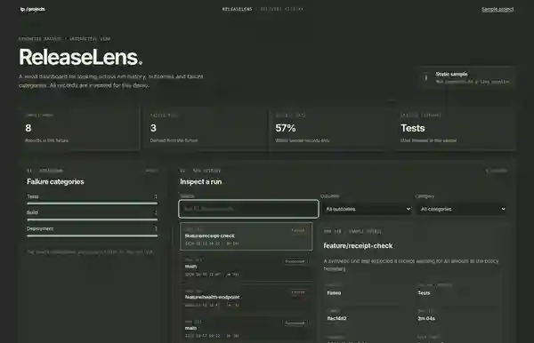
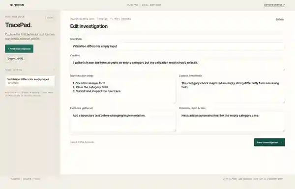

PROJECT INDEX / PUBLIC WORK
Small tools for questions I keep coming back to.
Each project has a narrow problem, a working implementation, and a limitation worth stating. The demos use synthetic data and do not connect to private systems.
01 / API + VALIDATION
PrototypeRuleTrace
Apply a set of rules to a synthetic record, then return an explanation a person can inspect.

The problem
Validation often returns a message that a record is invalid without showing which checks ran or why a particular check failed.
What is implemented
A minimal API with a health endpoint and a validation endpoint. Each response contains rule IDs, pass/fail results and plain-language explanations. The example policy uses synthetic expense records.
Current limitation
The API is not deployed. Run it locally with the .NET 10 SDK. The sample policy is deliberately small and is not a general rules engine.
02 / DATA EXPLORATION
PrototypeReleaseLens
Explore delivery history without connecting to a real pipeline or exposing internal build data.

The problem
A list of runs is hard to scan when outcomes, duration and failure reasons are mixed together.
What is implemented
A TypeScript dashboard with filters for outcome and failure category, search, derived summary counts, and a run-detail panel. The records are checked into the project as synthetic data.
Current limitation
There is no live CI integration, authentication, or server. The summary reflects only the bundled sample records.
03 / DEBUGGING WORKFLOW
Working browser prototypeTracePad
Keep a bug investigation in one place: reproduction steps, hypotheses, evidence, and outcome.

The problem
Investigation notes can end up scattered across chat, terminal history and personal scratch files.
What is implemented
Create investigation entries, record steps, hypothesis, evidence and outcome, reopen saved notes, and export entries as JSON.
Current limitation
Notes stay in this browser profile. There is no sync, collaboration, encryption layer or automatic backup.
PROJECT RULE
I only mark work as implemented when there is something you can open, inspect or run. I use sample data in public demos, and I keep employer code and internal details out of the repository.